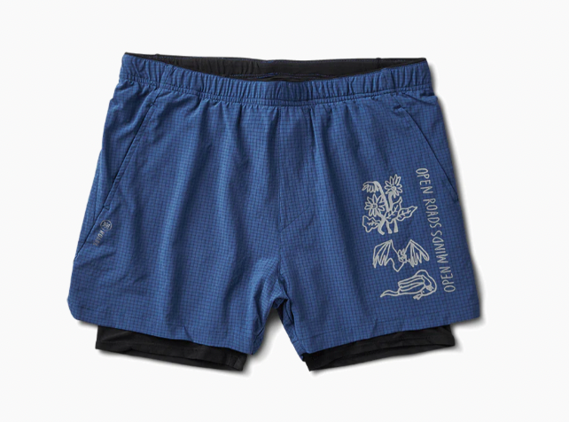
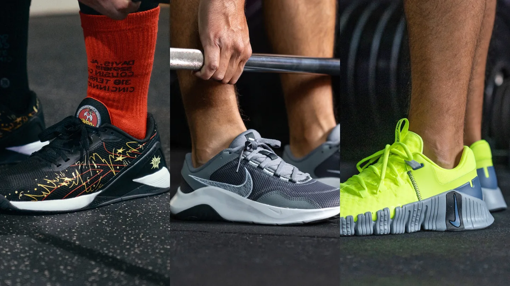

Gear And Apparel
Keep it Comfy and Practical
You should dress comfortably and functionally at the gym. That means no hefty materials, pants, or clothing that is too tight. Choose a sports top or breathable T-shirt and wear it with leggings or gym shorts. Purchasing a supportive sports bra is essential for women who want to be comfortable while exercising.
Consider the Material
Material matters! Choose clothing that wicks away sweating from your body and transfers it to the surface of the fabric, where it evaporates, to keep you cool. Nylon, Lycra, and polyester are all excellent choices. Cotton tends to retain moisture longer, but it can also be a comfortable option for mild exercise.
Source Used
Shorts or Leggings?
Shorts and leggings are common options for the lower half. Because they provide support and covering, leggings can be worn for almost any type of workout. To allow for flexibility, look for a pair that has a considerable level of stretch. Additionally, gym shorts might be a fantastic option, particularly for warmer temperatures or intense activities. Make sure they are comfortable and non-restrictive, regardless of the option you select. Keep in mind that your gym attire should be comfy and enable you to give your best effort. Having the proper equipment might be crucial whether you're performing yoga, lifting weights, or running on treadmills.
Shoes
Source Used
Trainers for running Running shoes are a fantastic option for high-impact workouts and treadmill use since they offer superior cushioning. They are an excellent choice for aerobic exercises because of their shock-absorbing construction.

Source Used